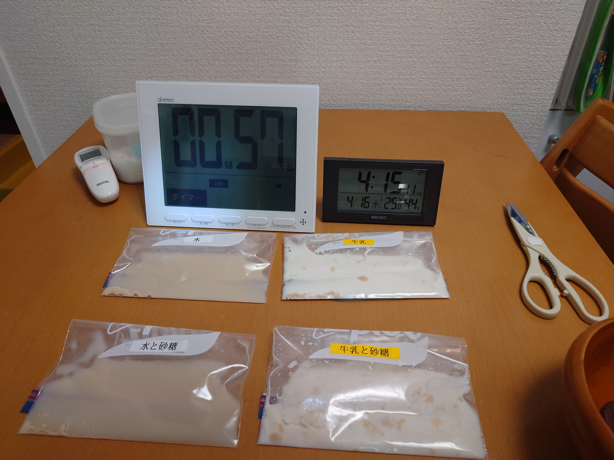
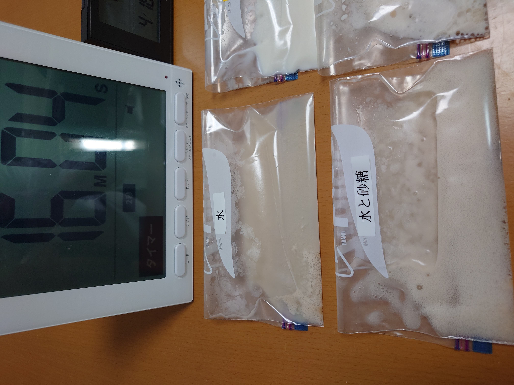
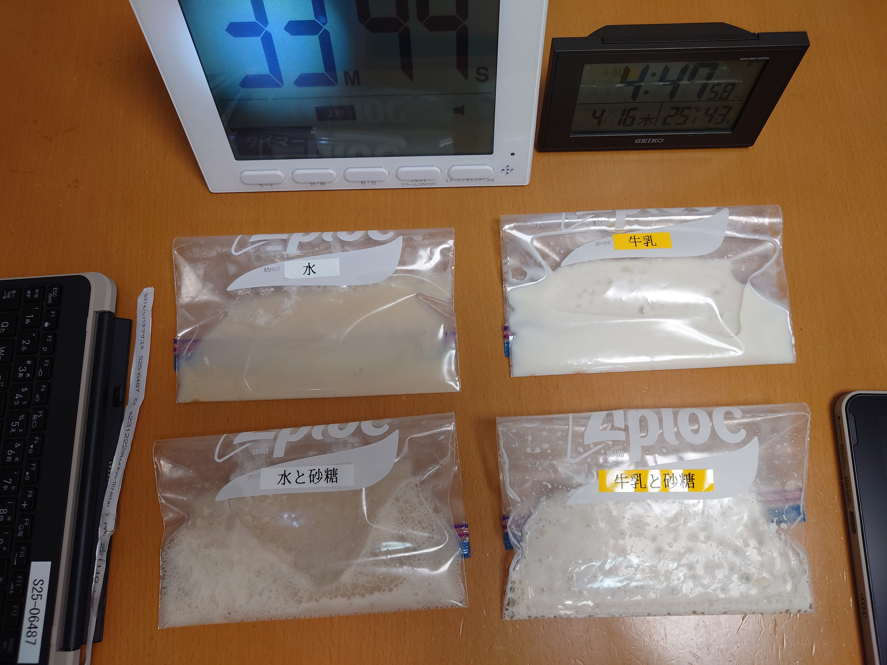
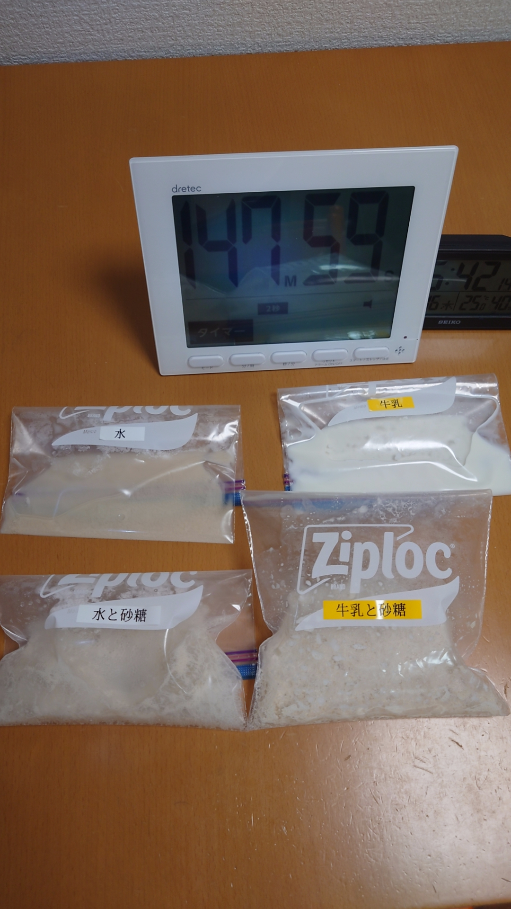

きっかけ
そこで、これまでのパン作りをくらべながら、 「発酵ってそもそも何？」「どんな条件で発酵はすすむの？」を考えることにしました。
パン作りの経験を比較で振り返る
しぼんだ理由を考えるために、これまでのパン作りの経験をくらべてみました。 今回、初めて経験したのは 「常温で、長い時間おいた」 という条件でした。
温度と時間でくらべてみた
| ケース | 温度 | 時間 | 結果 |
|---|---|---|---|
| ① これまでの成功 | 常温 | 短い | ふくらんだ |
| ② これまでの成功 | 低温 | 長い | しぼまなかった |
| ③ 今回 | 常温 | 長い | しぼんだ |
ここから、「発酵の条件」をもっとたしかめたい、という新しい問いが生まれました。
発酵の条件をさぐる
こうぼくんは、まずこんなことを考えました。
そして、 「水か、いつもパン作りのときにドライイーストを沈めている牛乳の影響も気になる」 と考えました。
こうして、今回は 「水か牛乳か」 と 「砂糖があるかないか」 をくらべることにしました。
今回の実験
- ドライイーストと水
- ドライイーストと水と砂糖
- ドライイーストと牛乳
- ドライイーストと牛乳と砂糖
時間で変わる様子を見てみよう
「最初はどうだったか」「いつ差が出はじめたか」「最後にどうなったか」を見ていきます。
最初のようす
まずは4つの袋を同じように並べて、実験を始めました。

16分後
砂糖ありの袋に、早くも泡が出てきました。
さらに、水のほうは泡が細かく、牛乳のほうは泡が大きく見えました。

33分後
時間がたつと、泡やふくらみの差がさらに見えやすくなってきました。
条件の違いが、少しずつ目に見える形で表れてきます。

147分後
砂糖を入れた2つの袋はパンパンに膨らみました。
一方で、砂糖なしの袋はふくらみ方が小さく、差がはっきり見えました。

こうぼくんの考え
また、 水と牛乳では泡のようすにも違いがある ことにも気づきました。
つまり、発酵には温度や時間だけでなく、 入れるもののちがい も関係していそうです。
次はどうする？
- 塩を入れるとどうなる？
- 水の温度でちがう？
- 砂糖の量でちがう？